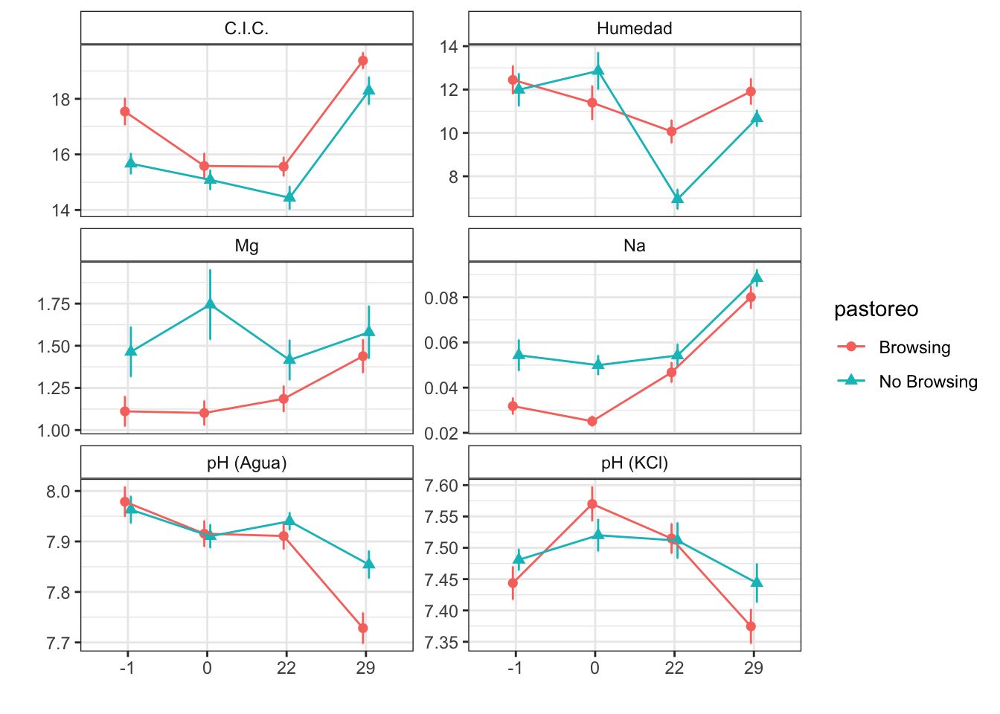

Last updated: 2021-09-10
Checks: 7 0
Knit directory: soil_alcontar/
This reproducible R Markdown analysis was created with workflowr (version 1.6.2). The Checks tab describes the reproducibility checks that were applied when the results were created. The Past versions tab lists the development history.
Great! Since the R Markdown file has been committed to the Git repository, you know the exact version of the code that produced these results.
Great job! The global environment was empty. Objects defined in the global environment can affect the analysis in your R Markdown file in unknown ways. For reproduciblity it’s best to always run the code in an empty environment.
The command set.seed(20210907) was run prior to running the code in the R Markdown file. Setting a seed ensures that any results that rely on randomness, e.g. subsampling or permutations, are reproducible.
Great job! Recording the operating system, R version, and package versions is critical for reproducibility.
Nice! There were no cached chunks for this analysis, so you can be confident that you successfully produced the results during this run.
Great job! Using relative paths to the files within your workflowr project makes it easier to run your code on other machines.
Great! You are using Git for version control. Tracking code development and connecting the code version to the results is critical for reproducibility.
The results in this page were generated with repository version 3d4254c. See the Past versions tab to see a history of the changes made to the R Markdown and HTML files.
Note that you need to be careful to ensure that all relevant files for the analysis have been committed to Git prior to generating the results (you can use wflow_publish or wflow_git_commit). workflowr only checks the R Markdown file, but you know if there are other scripts or data files that it depends on. Below is the status of the Git repository when the results were generated:
Ignored files:
Ignored: .RData
Ignored: .Rhistory
Ignored: .Rproj.user/C369E4F4/
Ignored: .Rproj.user/shared/notebooks/0EF54E14-NOBORRAR/
Ignored: .Rproj.user/shared/notebooks/3F603CAC-map/
Ignored: .Rproj.user/shared/notebooks/4A68381F-general_overview_soils/
Ignored: .Rproj.user/shared/notebooks/4E13660A-temporal_comparison/
Ignored: .Rproj.user/shared/notebooks/827D0727-analysis_pre_post/
Ignored: .Rproj.user/shared/notebooks/A3F813C2-index/
Ignored: .Rproj.user/shared/notebooks/D4E3AA10-analysis_zona_time/
Untracked files:
Untracked: analysis/NOBORRAR.Rmd
Untracked: analysis/analysis_pre_post_cache/
Untracked: analysis/test.Rmd
Untracked: data/spatial/01_EP_ANDALUCIA/EP_Andalucía.shp.DESKTOP-CKNNEUJ.5492.5304.sr.lock
Untracked: data/spatial/lucdeme/
Untracked: data/spatial/parcelas/GEO_PARCELAS.shp.DESKTOP-CKNNEUJ.5492.5304.sr.lock
Untracked: map.Rmd
Untracked: output/anovas_pre_post.csv
Untracked: output/anovas_zona_time.csv
Unstaged changes:
Modified: data/Resultados_Suelos_2018_2021_v2.xlsx
Modified: data/spatial/.DS_Store
Modified: data/spatial/01_EP_ANDALUCIA/EP_Andalucía.dbf
Deleted: index.Rmd
Modified: scripts/00_prepare_data.R
Modified: temporal_comparison.Rmd
Note that any generated files, e.g. HTML, png, CSS, etc., are not included in this status report because it is ok for generated content to have uncommitted changes.
These are the previous versions of the repository in which changes were made to the R Markdown (analysis/analysis_zona_time.Rmd) and HTML (docs/analysis_zona_time.html) files. If you’ve configured a remote Git repository (see ?wflow_git_remote), click on the hyperlinks in the table below to view the files as they were in that past version.
| File | Version | Author | Date | Message |
|---|---|---|---|---|
| Rmd | 3d4254c | ajpelu | 2021-09-10 | include analysis of time with browsing; add to index |
Analysis of temporal evolution of soil parameters along time.
Only for Autumn treatment (i.e. zona == “P”; zona == “NP”)
Interpret zona as “grazing effect”:
raw_soil <- readxl::read_excel(here::here("data/Resultados_Suelos_2018_2021_v2.xlsx"),
sheet = "SEGUIMIENTO_SUELOS_sin_ouliers") %>% janitor::clean_names() %>% mutate(treatment_name = case_when(str_detect(geo_parcela_nombre,
"NP_") ~ "Autumn Burning / No Browsing", str_detect(geo_parcela_nombre, "PR_") ~
"Spring Burning / Browsing", str_detect(geo_parcela_nombre, "P_") ~ "Autumn Burning / Browsing"),
zona = case_when(str_detect(geo_parcela_nombre, "NP_") ~ "QOt_NP", str_detect(geo_parcela_nombre,
"PR_") ~ "QPr_P", str_detect(geo_parcela_nombre, "P_") ~ "QOt_P"), fecha = lubridate::ymd(fecha),
pre_post_quema = case_when(pre_post_quema == "Prequema" ~ "0 preQuema", pre_post_quema ==
"Postquema" ~ "1 postQuema"))autumn_fire <- lubridate::ymd("2018-12-18")
soil <- raw_soil %>% filter(zona != "QPr_P") %>% mutate(zona = as.factor(zona)) %>%
mutate(meses = as.factor(case_when(fecha == "2018-12-11" ~ as.character("-1"),
fecha != "2018-12-11" ~ as.character(lubridate::interval(autumn_fire, lubridate::ymd(fecha))%/%months(1))))) %>%
mutate(pastoreo = as.factor(case_when(zona == "QOt_P" ~ "Browsing", zona == "QOt_NP" ~
"No Browsing"))) %>% relocate(pastoreo, fecha, meses) %>% dplyr::select(-pre_post_quema,
-tratamiento)
xtabs(~meses + pastoreo, data = soil) pastoreo
meses Browsing No Browsing
-1 24 24
0 24 24
22 25 25
29 24 24\(Y \sim pastoreo (Browsing|NoBrowsing)+ Fecha(-1|0|22|29) + zona \times Fecha\)
humedad ~ pastoreo * meses + (1 | pastoreo:geo_parcela_nombre)Type III Analysis of Variance Table with Satterthwaite's method
Sum Sq Mean Sq NumDF DenDF F value Pr(>F)
pastoreo 2.88 2.879 1 6.004 0.3883 0.556131
meses 457.42 152.472 3 179.021 20.5621 1.705e-11 ***
pastoreo:meses 137.33 45.775 3 179.021 6.1732 0.000514 ***
---
Signif. codes: 0 '***' 0.001 '**' 0.01 '*' 0.05 '.' 0.1 ' ' 1$`emmeans of pastoreo`
pastoreo emmean SE df lower.CL upper.CL
Browsing 11.5 0.973 6.01 9.07 13.8
No Browsing 10.6 0.973 5.99 8.22 13.0
Results are averaged over the levels of: meses
Degrees-of-freedom method: kenward-roger
Confidence level used: 0.95
$`pairwise differences of pastoreo`
1 estimate SE df t.ratio p.value
Browsing - No Browsing 0.857 1.38 6 0.623 0.5561
Results are averaged over the levels of: meses
Degrees-of-freedom method: kenward-roger $`emmeans of meses`
meses emmean SE df lower.CL upper.CL
-1 12.22 0.768 9.28 10.49 13.9
0 12.13 0.768 9.28 10.40 13.9
22 8.46 0.764 9.10 6.74 10.2
29 11.29 0.770 9.39 9.56 13.0
Results are averaged over the levels of: pastoreo
Degrees-of-freedom method: kenward-roger
Confidence level used: 0.95
$`pairwise differences of meses`
1 estimate SE df t.ratio p.value
(-1) - 0 0.0907 0.556 179 0.163 0.9984
(-1) - 22 3.7540 0.550 179 6.820 <.0001
(-1) - 29 0.9245 0.559 179 1.654 0.3513
0 - 22 3.6633 0.550 179 6.655 <.0001
0 - 29 0.8338 0.559 179 1.492 0.4447
22 - 29 -2.8295 0.554 179 -5.110 <.0001
Results are averaged over the levels of: pastoreo
Degrees-of-freedom method: kenward-roger
P value adjustment: tukey method for comparing a family of 4 estimates $`emmeans of meses | pastoreo`
pastoreo = Browsing:
meses emmean SE df lower.CL upper.CL
-1 12.45 1.09 9.28 10.00 14.9
0 11.39 1.09 9.28 8.95 13.8
22 10.07 1.08 9.10 7.63 12.5
29 11.91 1.09 9.50 9.46 14.4
pastoreo = No Browsing:
meses emmean SE df lower.CL upper.CL
-1 11.99 1.09 9.28 9.54 14.4
0 12.86 1.09 9.28 10.42 15.3
22 6.86 1.08 9.10 4.42 9.3
29 10.67 1.09 9.28 8.23 13.1
Degrees-of-freedom method: kenward-roger
Confidence level used: 0.95
$`pairwise differences of meses | pastoreo`
pastoreo = Browsing:
2 estimate SE df t.ratio p.value
(-1) - 0 1.054 0.786 179 1.341 0.5384
(-1) - 22 2.380 0.778 179 3.058 0.0136
(-1) - 29 0.535 0.795 179 0.673 0.9074
0 - 22 1.327 0.778 179 1.704 0.3245
0 - 29 -0.519 0.795 179 -0.653 0.9143
22 - 29 -1.846 0.788 179 -2.343 0.0922
pastoreo = No Browsing:
2 estimate SE df t.ratio p.value
(-1) - 0 -0.872 0.786 179 -1.110 0.6839
(-1) - 22 5.128 0.778 179 6.587 <.0001
(-1) - 29 1.314 0.786 179 1.672 0.3415
0 - 22 6.000 0.778 179 7.708 <.0001
0 - 29 2.187 0.786 179 2.782 0.0302
22 - 29 -3.813 0.778 179 -4.899 <.0001
Degrees-of-freedom method: kenward-roger
P value adjustment: tukey method for comparing a family of 4 estimates cic ~ pastoreo * meses + (1 | pastoreo:geo_parcela_nombre)Type III Analysis of Variance Table with Satterthwaite's method
Sum Sq Mean Sq NumDF DenDF F value Pr(>F)
pastoreo 9.00 9.001 1 5.985 2.5997 0.1581
meses 438.74 146.248 3 179.999 42.2385 <2e-16 ***
pastoreo:meses 11.43 3.811 3 179.999 1.1007 0.3503
---
Signif. codes: 0 '***' 0.001 '**' 0.01 '*' 0.05 '.' 0.1 ' ' 1$`emmeans of pastoreo`
pastoreo emmean SE df lower.CL upper.CL
Browsing 17.0 0.504 6 15.8 18.2
No Browsing 15.9 0.504 6 14.6 17.1
Results are averaged over the levels of: meses
Degrees-of-freedom method: kenward-roger
Confidence level used: 0.95
$`pairwise differences of pastoreo`
1 estimate SE df t.ratio p.value
Browsing - No Browsing 1.15 0.712 6 1.612 0.1580
Results are averaged over the levels of: meses
Degrees-of-freedom method: kenward-roger $`emmeans of meses`
meses emmean SE df lower.CL upper.CL
-1 16.6 0.426 12.2 15.7 17.5
0 15.3 0.426 12.2 14.4 16.3
22 15.0 0.422 11.8 14.1 15.9
29 18.8 0.426 12.2 17.9 19.8
Results are averaged over the levels of: pastoreo
Degrees-of-freedom method: kenward-roger
Confidence level used: 0.95
$`pairwise differences of meses`
1 estimate SE df t.ratio p.value
(-1) - 0 1.271 0.380 180 3.346 0.0055
(-1) - 22 1.605 0.376 180 4.268 0.0002
(-1) - 29 -2.229 0.380 180 -5.869 <.0001
0 - 22 0.335 0.376 180 0.889 0.8103
0 - 29 -3.500 0.380 180 -9.215 <.0001
22 - 29 -3.835 0.376 180 -10.195 <.0001
Results are averaged over the levels of: pastoreo
Degrees-of-freedom method: kenward-roger
P value adjustment: tukey method for comparing a family of 4 estimates $`emmeans of meses | pastoreo`
pastoreo = Browsing:
meses emmean SE df lower.CL upper.CL
-1 17.5 0.602 12.2 16.2 18.9
0 15.6 0.602 12.2 14.3 16.9
22 15.6 0.597 11.8 14.3 16.9
29 19.4 0.602 12.2 18.1 20.7
pastoreo = No Browsing:
meses emmean SE df lower.CL upper.CL
-1 15.7 0.602 12.2 14.4 17.0
0 15.1 0.602 12.2 13.8 16.4
22 14.4 0.597 11.8 13.1 15.7
29 18.3 0.602 12.2 17.0 19.6
Degrees-of-freedom method: kenward-roger
Confidence level used: 0.95
$`pairwise differences of meses | pastoreo`
pastoreo = Browsing:
2 estimate SE df t.ratio p.value
(-1) - 0 1.9583 0.537 180 3.646 0.0020
(-1) - 22 1.9748 0.532 180 3.713 0.0015
(-1) - 29 -1.8333 0.537 180 -3.413 0.0044
0 - 22 0.0165 0.532 180 0.031 1.0000
0 - 29 -3.7917 0.537 180 -7.059 <.0001
22 - 29 -3.8081 0.532 180 -7.159 <.0001
pastoreo = No Browsing:
2 estimate SE df t.ratio p.value
(-1) - 0 0.5833 0.537 180 1.086 0.6986
(-1) - 22 1.2360 0.532 180 2.324 0.0965
(-1) - 29 -2.6250 0.537 180 -4.887 <.0001
0 - 22 0.6526 0.532 180 1.227 0.6106
0 - 29 -3.2083 0.537 180 -5.973 <.0001
22 - 29 -3.8610 0.532 180 -7.259 <.0001
Degrees-of-freedom method: kenward-roger
P value adjustment: tukey method for comparing a family of 4 estimates c_percent ~ pastoreo * meses + (1 | pastoreo:geo_parcela_nombre)Type III Analysis of Variance Table with Satterthwaite's method
Sum Sq Mean Sq NumDF DenDF F value Pr(>F)
pastoreo 2.9209 2.9209 1 5.997 1.5209 0.263626
meses 31.1686 10.3895 3 180.001 5.4097 0.001382 **
pastoreo:meses 0.5844 0.1948 3 180.001 0.1014 0.959107
---
Signif. codes: 0 '***' 0.001 '**' 0.01 '*' 0.05 '.' 0.1 ' ' 1$`emmeans of pastoreo`
pastoreo emmean SE df lower.CL upper.CL
Browsing 8.03 0.78 6 6.12 9.94
No Browsing 6.67 0.78 6 4.76 8.58
Results are averaged over the levels of: meses
Degrees-of-freedom method: kenward-roger
Confidence level used: 0.95
$`pairwise differences of pastoreo`
1 estimate SE df t.ratio p.value
Browsing - No Browsing 1.36 1.1 6 1.233 0.2636
Results are averaged over the levels of: meses
Degrees-of-freedom method: kenward-roger $`emmeans of meses`
meses emmean SE df lower.CL upper.CL
-1 7.22 0.578 7.25 5.86 8.58
0 8.00 0.578 7.25 6.64 9.35
22 6.90 0.577 7.18 5.55 8.26
29 7.27 0.578 7.25 5.92 8.63
Results are averaged over the levels of: pastoreo
Degrees-of-freedom method: kenward-roger
Confidence level used: 0.95
$`pairwise differences of meses`
1 estimate SE df t.ratio p.value
(-1) - 0 -0.7779 0.283 180 -2.750 0.0330
(-1) - 22 0.3158 0.280 180 1.127 0.6732
(-1) - 29 -0.0523 0.283 180 -0.185 0.9977
0 - 22 1.0937 0.280 180 3.904 0.0008
0 - 29 0.7256 0.283 180 2.565 0.0537
22 - 29 -0.3681 0.280 180 -1.314 0.5552
Results are averaged over the levels of: pastoreo
Degrees-of-freedom method: kenward-roger
P value adjustment: tukey method for comparing a family of 4 estimates $`emmeans of meses | pastoreo`
pastoreo = Browsing:
meses emmean SE df lower.CL upper.CL
-1 7.94 0.817 7.25 6.02 9.86
0 8.73 0.817 7.25 6.81 10.65
22 7.49 0.815 7.18 5.58 9.41
29 7.96 0.817 7.25 6.04 9.87
pastoreo = No Browsing:
meses emmean SE df lower.CL upper.CL
-1 6.50 0.817 7.25 4.58 8.42
0 7.27 0.817 7.25 5.35 9.19
22 6.31 0.815 7.18 4.40 8.23
29 6.59 0.817 7.25 4.67 8.51
Degrees-of-freedom method: kenward-roger
Confidence level used: 0.95
$`pairwise differences of meses | pastoreo`
pastoreo = Browsing:
2 estimate SE df t.ratio p.value
(-1) - 0 -0.7904 0.400 180 -1.976 0.2010
(-1) - 22 0.4423 0.396 180 1.117 0.6798
(-1) - 29 -0.0187 0.400 180 -0.047 1.0000
0 - 22 1.2328 0.396 180 3.112 0.0115
0 - 29 0.7717 0.400 180 1.929 0.2197
22 - 29 -0.4611 0.396 180 -1.164 0.6503
pastoreo = No Browsing:
2 estimate SE df t.ratio p.value
(-1) - 0 -0.7654 0.400 180 -1.913 0.2261
(-1) - 22 0.1892 0.396 180 0.478 0.9639
(-1) - 29 -0.0859 0.400 180 -0.215 0.9965
0 - 22 0.9546 0.396 180 2.410 0.0789
0 - 29 0.6795 0.400 180 1.699 0.3275
22 - 29 -0.2751 0.396 180 -0.694 0.8991
Degrees-of-freedom method: kenward-roger
P value adjustment: tukey method for comparing a family of 4 estimates fe_percent ~ pastoreo * meses + (1 | pastoreo:geo_parcela_nombre)Fitting one lmer() model. [DONE]
Calculating p-values. [DONE]Mixed Model Anova Table (Type 3 tests, KR-method)
Model: fe_percent ~ pastoreo * meses + (1 | pastoreo:geo_parcela_nombre)
Data: df_model
num Df den Df F Pr(>F)
pastoreo 1 6 0.4418 0.5310
meses 3 180 101.4492 <2e-16 ***
pastoreo:meses 3 180 1.6605 0.1772
---
Signif. codes: 0 '***' 0.001 '**' 0.01 '*' 0.05 '.' 0.1 ' ' 1$`emmeans of pastoreo`
pastoreo emmean SE df asymp.LCL asymp.UCL
Browsing 0.562 0.0564 Inf 0.452 0.673
No Browsing 0.480 0.0602 Inf 0.362 0.598
Results are averaged over the levels of: meses
Results are given on the inverse (not the response) scale.
Confidence level used: 0.95
$`pairwise differences of pastoreo`
1 estimate SE df z.ratio p.value
Browsing - No Browsing 0.0827 0.0824 Inf 1.004 0.3152
Results are averaged over the levels of: meses
Note: contrasts are still on the inverse scale $`emmeans of meses`
meses emmean SE df asymp.LCL asymp.UCL
-1 0.566 0.0426 Inf 0.483 0.650
0 0.583 0.0427 Inf 0.499 0.666
22 0.538 0.0423 Inf 0.455 0.621
29 0.397 0.0417 Inf 0.315 0.479
Results are averaged over the levels of: pastoreo
Results are given on the inverse (not the response) scale.
Confidence level used: 0.95
$`pairwise differences of meses`
1 estimate SE df z.ratio p.value
(-1) - 0 -0.0164 0.0168 Inf -0.974 0.7645
(-1) - 22 0.0287 0.0159 Inf 1.801 0.2727
(-1) - 29 0.1694 0.0141 Inf 12.007 <.0001
0 - 22 0.0450 0.0162 Inf 2.783 0.0276
0 - 29 0.1858 0.0144 Inf 12.893 <.0001
22 - 29 0.1407 0.0133 Inf 10.551 <.0001
Results are averaged over the levels of: pastoreo
Note: contrasts are still on the inverse scale
P value adjustment: tukey method for comparing a family of 4 estimates $`emmeans of meses | pastoreo`
pastoreo = Browsing:
meses emmean SE df asymp.LCL asymp.UCL
-1 0.618 0.0584 Inf 0.504 0.733
0 0.629 0.0585 Inf 0.514 0.744
22 0.562 0.0578 Inf 0.448 0.675
29 0.440 0.0570 Inf 0.328 0.552
pastoreo = No Browsing:
meses emmean SE df asymp.LCL asymp.UCL
-1 0.514 0.0618 Inf 0.393 0.635
0 0.536 0.0619 Inf 0.415 0.658
22 0.514 0.0617 Inf 0.393 0.635
29 0.354 0.0607 Inf 0.235 0.473
Results are given on the inverse (not the response) scale.
Confidence level used: 0.95
$`pairwise differences of meses | pastoreo`
pastoreo = Browsing:
2 estimate SE df z.ratio p.value
(-1) - 0 -0.010670 0.0248 Inf -0.430 0.9733
(-1) - 22 0.056553 0.0230 Inf 2.459 0.0665
(-1) - 29 0.178094 0.0209 Inf 8.538 <.0001
0 - 22 0.067223 0.0233 Inf 2.890 0.0201
0 - 29 0.188764 0.0211 Inf 8.925 <.0001
22 - 29 0.121541 0.0190 Inf 6.405 <.0001
pastoreo = No Browsing:
2 estimate SE df z.ratio p.value
(-1) - 0 -0.022056 0.0227 Inf -0.972 0.7656
(-1) - 22 0.000763 0.0220 Inf 0.035 1.0000
(-1) - 29 0.160696 0.0190 Inf 8.458 <.0001
0 - 22 0.022818 0.0225 Inf 1.015 0.7408
0 - 29 0.182751 0.0196 Inf 9.338 <.0001
22 - 29 0.159933 0.0188 Inf 8.529 <.0001
Note: contrasts are still on the inverse scale
P value adjustment: tukey method for comparing a family of 4 estimates k_percent ~ pastoreo * meses + (1 | pastoreo:geo_parcela_nombre)Fitting one lmer() model. [DONE]
Calculating p-values. [DONE]Mixed Model Anova Table (Type 3 tests, KR-method)
Model: k_percent ~ pastoreo * meses + (1 | pastoreo:geo_parcela_nombre)
Data: df_model
num Df den Df F Pr(>F)
pastoreo 1 6.00 3.9693 0.093415 .
meses 3 180.01 333.1065 < 2.2e-16 ***
pastoreo:meses 3 180.01 4.3516 0.005489 **
---
Signif. codes: 0 '***' 0.001 '**' 0.01 '*' 0.05 '.' 0.1 ' ' 1$`emmeans of pastoreo`
pastoreo emmean SE df asymp.LCL asymp.UCL
Browsing 2.47 0.157 Inf 2.17 2.78
No Browsing 1.68 0.159 Inf 1.37 1.99
Results are averaged over the levels of: meses
Results are given on the inverse (not the response) scale.
Confidence level used: 0.95
$`pairwise differences of pastoreo`
1 estimate SE df z.ratio p.value
Browsing - No Browsing 0.796 0.222 Inf 3.578 0.0003
Results are averaged over the levels of: meses
Note: contrasts are still on the inverse scale $`emmeans of meses`
meses emmean SE df asymp.LCL asymp.UCL
-1 2.393 0.138 Inf 2.122 2.66
0 2.733 0.149 Inf 2.441 3.03
22 2.195 0.131 Inf 1.937 2.45
29 0.982 0.110 Inf 0.765 1.20
Results are averaged over the levels of: pastoreo
Results are given on the inverse (not the response) scale.
Confidence level used: 0.95
$`pairwise differences of meses`
1 estimate SE df z.ratio p.value
(-1) - 0 -0.340 0.1407 Inf -2.420 0.0733
(-1) - 22 0.198 0.1214 Inf 1.632 0.3604
(-1) - 29 1.411 0.0976 Inf 14.464 <.0001
0 - 22 0.539 0.1337 Inf 4.028 0.0003
0 - 29 1.752 0.1125 Inf 15.569 <.0001
22 - 29 1.213 0.0872 Inf 13.919 <.0001
Results are averaged over the levels of: pastoreo
Note: contrasts are still on the inverse scale
P value adjustment: tukey method for comparing a family of 4 estimates $`emmeans of meses | pastoreo`
pastoreo = Browsing:
meses emmean SE df asymp.LCL asymp.UCL
-1 2.908 0.208 Inf 2.500 3.32
0 3.558 0.236 Inf 3.096 4.02
22 2.378 0.186 Inf 2.013 2.74
29 1.049 0.151 Inf 0.753 1.35
pastoreo = No Browsing:
meses emmean SE df asymp.LCL asymp.UCL
-1 1.878 0.181 Inf 1.522 2.23
0 1.908 0.182 Inf 1.551 2.27
22 2.011 0.184 Inf 1.650 2.37
29 0.914 0.159 Inf 0.603 1.23
Results are given on the inverse (not the response) scale.
Confidence level used: 0.95
$`pairwise differences of meses | pastoreo`
pastoreo = Browsing:
2 estimate SE df z.ratio p.value
(-1) - 0 -0.6499 0.243 Inf -2.669 0.0381
(-1) - 22 0.5300 0.196 Inf 2.706 0.0344
(-1) - 29 1.8593 0.162 Inf 11.483 <.0001
0 - 22 1.1799 0.225 Inf 5.248 <.0001
0 - 29 2.5092 0.196 Inf 12.800 <.0001
22 - 29 1.3293 0.132 Inf 10.078 <.0001
pastoreo = No Browsing:
2 estimate SE df z.ratio p.value
(-1) - 0 -0.0309 0.141 Inf -0.219 0.9963
(-1) - 22 -0.1336 0.144 Inf -0.931 0.7884
(-1) - 29 0.9631 0.109 Inf 8.852 <.0001
0 - 22 -0.1027 0.145 Inf -0.709 0.8934
0 - 29 0.9941 0.110 Inf 9.007 <.0001
22 - 29 1.0968 0.114 Inf 9.633 <.0001
Note: contrasts are still on the inverse scale
P value adjustment: tukey method for comparing a family of 4 estimates mg_percent ~ pastoreo * meses + (1 | pastoreo:geo_parcela_nombre)Fitting one lmer() model. [DONE]
Calculating p-values. [DONE]Mixed Model Anova Table (Type 3 tests, KR-method)
Model: mg_percent ~ pastoreo * meses + (1 | pastoreo:geo_parcela_nombre)
Data: df_model
num Df den Df F Pr(>F)
pastoreo 1 6 0.8038 0.40448
meses 3 180 3.1550 0.02614 *
pastoreo:meses 3 180 3.2034 0.02455 *
---
Signif. codes: 0 '***' 0.001 '**' 0.01 '*' 0.05 '.' 0.1 ' ' 1$`emmeans of pastoreo`
pastoreo emmean SE df asymp.LCL asymp.UCL
Browsing 0.973 0.145 Inf 0.689 1.26
No Browsing 0.766 0.155 Inf 0.463 1.07
Results are averaged over the levels of: meses
Results are given on the inverse (not the response) scale.
Confidence level used: 0.95
$`pairwise differences of pastoreo`
1 estimate SE df z.ratio p.value
Browsing - No Browsing 0.206 0.212 Inf 0.973 0.3307
Results are averaged over the levels of: meses
Note: contrasts are still on the inverse scale $`emmeans of meses`
meses emmean SE df asymp.LCL asymp.UCL
-1 0.913 0.110 Inf 0.698 1.13
0 0.870 0.109 Inf 0.655 1.08
22 0.900 0.109 Inf 0.685 1.11
29 0.796 0.108 Inf 0.584 1.01
Results are averaged over the levels of: pastoreo
Results are given on the inverse (not the response) scale.
Confidence level used: 0.95
$`pairwise differences of meses`
1 estimate SE df z.ratio p.value
(-1) - 0 0.0439 0.0442 Inf 0.993 0.7536
(-1) - 22 0.0139 0.0444 Inf 0.313 0.9894
(-1) - 29 0.1176 0.0415 Inf 2.831 0.0240
0 - 22 -0.0300 0.0432 Inf -0.696 0.8988
0 - 29 0.0737 0.0402 Inf 1.832 0.2582
22 - 29 0.1037 0.0404 Inf 2.569 0.0500
Results are averaged over the levels of: pastoreo
Note: contrasts are still on the inverse scale
P value adjustment: tukey method for comparing a family of 4 estimates $`emmeans of meses | pastoreo`
pastoreo = Browsing:
meses emmean SE df asymp.LCL asymp.UCL
-1 1.029 0.152 Inf 0.732 1.33
0 1.037 0.152 Inf 0.739 1.33
22 0.986 0.151 Inf 0.691 1.28
29 0.839 0.148 Inf 0.548 1.13
pastoreo = No Browsing:
meses emmean SE df asymp.LCL asymp.UCL
-1 0.797 0.158 Inf 0.487 1.11
0 0.702 0.157 Inf 0.394 1.01
22 0.813 0.159 Inf 0.502 1.12
29 0.753 0.158 Inf 0.444 1.06
Results are given on the inverse (not the response) scale.
Confidence level used: 0.95
$`pairwise differences of meses | pastoreo`
pastoreo = Browsing:
2 estimate SE df z.ratio p.value
(-1) - 0 -0.00738 0.0735 Inf -0.101 0.9996
(-1) - 22 0.04298 0.0702 Inf 0.612 0.9282
(-1) - 29 0.19094 0.0650 Inf 2.935 0.0175
0 - 22 0.05036 0.0705 Inf 0.714 0.8916
0 - 29 0.19833 0.0654 Inf 3.031 0.0130
22 - 29 0.14796 0.0616 Inf 2.401 0.0768
pastoreo = No Browsing:
2 estimate SE df z.ratio p.value
(-1) - 0 0.09518 0.0492 Inf 1.934 0.2139
(-1) - 22 -0.01523 0.0543 Inf -0.280 0.9923
(-1) - 29 0.04420 0.0517 Inf 0.856 0.8276
0 - 22 -0.11041 0.0498 Inf -2.218 0.1183
0 - 29 -0.05098 0.0468 Inf -1.090 0.6959
22 - 29 0.05943 0.0522 Inf 1.139 0.6650
Note: contrasts are still on the inverse scale
P value adjustment: tukey method for comparing a family of 4 estimates c_n ~ pastoreo * meses + (1 | pastoreo:geo_parcela_nombre)Fitting one lmer() model. [DONE]
Calculating p-values. [DONE]Mixed Model Anova Table (Type 3 tests, KR-method)
Model: c_n ~ pastoreo * meses + (1 | pastoreo:geo_parcela_nombre)
Data: df_model
num Df den Df F Pr(>F)
pastoreo 1 6.0001 0.4794 0.5146
meses 3 179.0155 1.2883 0.2799
pastoreo:meses 3 179.0155 0.2166 0.8848$`emmeans of pastoreo`
pastoreo emmean SE df asymp.LCL asymp.UCL
Browsing 0.0280 0.00333 Inf 0.0214 0.0345
No Browsing 0.0309 0.00380 Inf 0.0235 0.0384
Results are averaged over the levels of: meses
Results are given on the inverse (not the response) scale.
Confidence level used: 0.95
$`pairwise differences of pastoreo`
1 estimate SE df z.ratio p.value
Browsing - No Browsing -0.00297 0.00458 Inf -0.649 0.5167
Results are averaged over the levels of: meses
Note: contrasts are still on the inverse scale $`emmeans of meses`
meses emmean SE df asymp.LCL asymp.UCL
-1 0.0275 0.00292 Inf 0.0218 0.0333
0 0.0299 0.00299 Inf 0.0240 0.0357
22 0.0287 0.00299 Inf 0.0228 0.0345
29 0.0316 0.00304 Inf 0.0257 0.0376
Results are averaged over the levels of: pastoreo
Results are given on the inverse (not the response) scale.
Confidence level used: 0.95
$`pairwise differences of meses`
1 estimate SE df z.ratio p.value
(-1) - 0 -0.00234 0.00186 Inf -1.254 0.5921
(-1) - 22 -0.00111 0.00178 Inf -0.624 0.9245
(-1) - 29 -0.00410 0.00195 Inf -2.100 0.1530
0 - 22 0.00123 0.00189 Inf 0.647 0.9166
0 - 29 -0.00176 0.00204 Inf -0.863 0.8240
22 - 29 -0.00299 0.00198 Inf -1.509 0.4323
Results are averaged over the levels of: pastoreo
Note: contrasts are still on the inverse scale
P value adjustment: tukey method for comparing a family of 4 estimates $`emmeans of meses | pastoreo`
pastoreo = Browsing:
meses emmean SE df asymp.LCL asymp.UCL
-1 0.0262 0.00331 Inf 0.0197 0.0327
0 0.0287 0.00374 Inf 0.0214 0.0361
22 0.0263 0.00376 Inf 0.0190 0.0337
29 0.0305 0.00381 Inf 0.0230 0.0380
pastoreo = No Browsing:
meses emmean SE df asymp.LCL asymp.UCL
-1 0.0289 0.00416 Inf 0.0207 0.0370
0 0.0310 0.00419 Inf 0.0228 0.0392
22 0.0310 0.00417 Inf 0.0228 0.0392
29 0.0328 0.00429 Inf 0.0244 0.0412
Results are given on the inverse (not the response) scale.
Confidence level used: 0.95
$`pairwise differences of meses | pastoreo`
pastoreo = Browsing:
2 estimate SE df z.ratio p.value
(-1) - 0 -2.52e-03 0.00242 Inf -1.044 0.7237
(-1) - 22 -9.62e-05 0.00223 Inf -0.043 1.0000
(-1) - 29 -4.30e-03 0.00252 Inf -1.702 0.3225
0 - 22 2.43e-03 0.00247 Inf 0.984 0.7586
0 - 29 -1.77e-03 0.00271 Inf -0.655 0.9138
22 - 29 -4.20e-03 0.00257 Inf -1.634 0.3596
pastoreo = No Browsing:
2 estimate SE df z.ratio p.value
(-1) - 0 -2.16e-03 0.00281 Inf -0.767 0.8695
(-1) - 22 -2.13e-03 0.00277 Inf -0.771 0.8678
(-1) - 29 -3.90e-03 0.00295 Inf -1.322 0.5485
0 - 22 2.54e-05 0.00288 Inf 0.009 1.0000
0 - 29 -1.75e-03 0.00305 Inf -0.572 0.9404
22 - 29 -1.77e-03 0.00301 Inf -0.589 0.9355
Note: contrasts are still on the inverse scale
P value adjustment: tukey method for comparing a family of 4 estimates mo ~ pastoreo * meses + (1 | pastoreo:geo_parcela_nombre)Fitting one lmer() model. [DONE]
Calculating p-values. [DONE]Mixed Model Anova Table (Type 3 tests, KR-method)
Model: mo ~ pastoreo * meses + (1 | pastoreo:geo_parcela_nombre)
Data: df_model
num Df den Df F Pr(>F)
pastoreo 1 5.9995 1.4822 0.2691
meses 3 180.0402 15.1444 7.86e-09 ***
pastoreo:meses 3 180.0402 0.5464 0.6512
---
Signif. codes: 0 '***' 0.001 '**' 0.01 '*' 0.05 '.' 0.1 ' ' 1$`emmeans of pastoreo`
pastoreo emmean SE df asymp.LCL asymp.UCL
Browsing 0.207 0.0179 Inf 0.172 0.242
No Browsing 0.236 0.0184 Inf 0.200 0.272
Results are averaged over the levels of: meses
Results are given on the inverse (not the response) scale.
Confidence level used: 0.95
$`pairwise differences of pastoreo`
1 estimate SE df z.ratio p.value
Browsing - No Browsing -0.029 0.0256 Inf -1.133 0.2573
Results are averaged over the levels of: meses
Note: contrasts are still on the inverse scale $`emmeans of meses`
meses emmean SE df asymp.LCL asymp.UCL
-1 0.192 0.0157 Inf 0.162 0.223
0 0.171 0.0149 Inf 0.142 0.200
22 0.227 0.0170 Inf 0.194 0.261
29 0.296 0.0205 Inf 0.256 0.336
Results are averaged over the levels of: pastoreo
Results are given on the inverse (not the response) scale.
Confidence level used: 0.95
$`pairwise differences of meses`
1 estimate SE df z.ratio p.value
(-1) - 0 0.0214 0.0147 Inf 1.459 0.4628
(-1) - 22 -0.0348 0.0170 Inf -2.052 0.1692
(-1) - 29 -0.1033 0.0204 Inf -5.061 <.0001
0 - 22 -0.0563 0.0161 Inf -3.489 0.0027
0 - 29 -0.1248 0.0197 Inf -6.327 <.0001
22 - 29 -0.0685 0.0215 Inf -3.194 0.0077
Results are averaged over the levels of: pastoreo
Note: contrasts are still on the inverse scale
P value adjustment: tukey method for comparing a family of 4 estimates $`emmeans of meses | pastoreo`
pastoreo = Browsing:
meses emmean SE df asymp.LCL asymp.UCL
-1 0.170 0.0209 Inf 0.129 0.211
0 0.165 0.0207 Inf 0.124 0.205
22 0.215 0.0234 Inf 0.169 0.261
29 0.279 0.0279 Inf 0.225 0.334
pastoreo = No Browsing:
meses emmean SE df asymp.LCL asymp.UCL
-1 0.215 0.0233 Inf 0.170 0.261
0 0.177 0.0211 Inf 0.136 0.219
22 0.240 0.0246 Inf 0.191 0.288
29 0.312 0.0299 Inf 0.254 0.371
Results are given on the inverse (not the response) scale.
Confidence level used: 0.95
$`pairwise differences of meses | pastoreo`
pastoreo = Browsing:
2 estimate SE df z.ratio p.value
(-1) - 0 0.00482 0.0193 Inf 0.250 0.9945
(-1) - 22 -0.04537 0.0222 Inf -2.046 0.1711
(-1) - 29 -0.10954 0.0268 Inf -4.081 0.0003
0 - 22 -0.05018 0.0219 Inf -2.289 0.1005
0 - 29 -0.11436 0.0266 Inf -4.293 0.0001
22 - 29 -0.06418 0.0288 Inf -2.229 0.1155
pastoreo = No Browsing:
2 estimate SE df z.ratio p.value
(-1) - 0 0.03807 0.0222 Inf 1.714 0.3162
(-1) - 22 -0.02429 0.0257 Inf -0.945 0.7806
(-1) - 29 -0.09712 0.0308 Inf -3.156 0.0087
0 - 22 -0.06236 0.0237 Inf -2.635 0.0418
0 - 29 -0.13519 0.0291 Inf -4.648 <.0001
22 - 29 -0.07283 0.0318 Inf -2.290 0.1003
Note: contrasts are still on the inverse scale
P value adjustment: tukey method for comparing a family of 4 estimates p_h_agua_eez ~ pastoreo * meses + (1 | pastoreo:geo_parcela_nombre)Fitting one lmer() model. [DONE]
Calculating p-values. [DONE]Mixed Model Anova Table (Type 3 tests, KR-method)
Model: p_h_agua_eez ~ pastoreo * meses + (1 | pastoreo:geo_parcela_nombre)
Data: df_model
num Df den Df F Pr(>F)
pastoreo 1 5.9998 0.7555 0.41814
meses 3 180.0226 18.9834 9.647e-11 ***
pastoreo:meses 3 180.0226 3.3264 0.02092 *
---
Signif. codes: 0 '***' 0.001 '**' 0.01 '*' 0.05 '.' 0.1 ' ' 1$`emmeans of pastoreo`
pastoreo emmean SE df asymp.LCL asymp.UCL
Browsing 0.127 0.000532 Inf 0.126 0.128
No Browsing 0.126 0.000532 Inf 0.125 0.127
Results are averaged over the levels of: meses
Results are given on the inverse (not the response) scale.
Confidence level used: 0.95
$`pairwise differences of pastoreo`
1 estimate SE df z.ratio p.value
Browsing - No Browsing 0.00055 0.000752 Inf 0.731 0.4646
Results are averaged over the levels of: meses
Note: contrasts are still on the inverse scale $`emmeans of meses`
meses emmean SE df asymp.LCL asymp.UCL
-1 0.125 0.000444 Inf 0.125 0.126
0 0.126 0.000445 Inf 0.126 0.127
22 0.126 0.000442 Inf 0.125 0.127
29 0.128 0.000448 Inf 0.127 0.129
Results are averaged over the levels of: pastoreo
Results are given on the inverse (not the response) scale.
Confidence level used: 0.95
$`pairwise differences of meses`
1 estimate SE df z.ratio p.value
(-1) - 0 -0.000918 0.000387 Inf -2.368 0.0833
(-1) - 22 -0.000682 0.000383 Inf -1.780 0.2829
(-1) - 29 -0.002900 0.000391 Inf -7.426 <.0001
0 - 22 0.000235 0.000385 Inf 0.611 0.9287
0 - 29 -0.001982 0.000392 Inf -5.055 <.0001
22 - 29 -0.002217 0.000388 Inf -5.714 <.0001
Results are averaged over the levels of: pastoreo
Note: contrasts are still on the inverse scale
P value adjustment: tukey method for comparing a family of 4 estimates $`emmeans of meses | pastoreo`
pastoreo = Browsing:
meses emmean SE df asymp.LCL asymp.UCL
-1 0.125 0.000627 Inf 0.124 0.127
0 0.126 0.000629 Inf 0.125 0.128
22 0.126 0.000625 Inf 0.125 0.128
29 0.129 0.000635 Inf 0.128 0.131
pastoreo = No Browsing:
meses emmean SE df asymp.LCL asymp.UCL
-1 0.126 0.000629 Inf 0.124 0.127
0 0.126 0.000630 Inf 0.125 0.128
22 0.126 0.000625 Inf 0.125 0.127
29 0.127 0.000632 Inf 0.126 0.129
Results are given on the inverse (not the response) scale.
Confidence level used: 0.95
$`pairwise differences of meses | pastoreo`
pastoreo = Browsing:
2 estimate SE df z.ratio p.value
(-1) - 0 -1.00e-03 0.000547 Inf -1.833 0.2576
(-1) - 22 -1.03e-03 0.000541 Inf -1.900 0.2279
(-1) - 29 -4.06e-03 0.000553 Inf -7.337 <.0001
0 - 22 -2.66e-05 0.000545 Inf -0.049 1.0000
0 - 29 -3.06e-03 0.000557 Inf -5.495 <.0001
22 - 29 -3.03e-03 0.000551 Inf -5.498 <.0001
pastoreo = No Browsing:
2 estimate SE df z.ratio p.value
(-1) - 0 -8.33e-04 0.000548 Inf -1.519 0.4262
(-1) - 22 -3.36e-04 0.000542 Inf -0.620 0.9258
(-1) - 29 -1.74e-03 0.000550 Inf -3.160 0.0086
0 - 22 4.97e-04 0.000544 Inf 0.913 0.7977
0 - 29 -9.06e-04 0.000552 Inf -1.641 0.3556
22 - 29 -1.40e-03 0.000546 Inf -2.570 0.0499
Note: contrasts are still on the inverse scale
P value adjustment: tukey method for comparing a family of 4 estimates p_h_k_cl ~ pastoreo * meses + (1 | pastoreo:geo_parcela_nombre)Fitting one lmer() model. [DONE]
Calculating p-values. [DONE]Mixed Model Anova Table (Type 3 tests, KR-method)
Model: p_h_k_cl ~ pastoreo * meses + (1 | pastoreo:geo_parcela_nombre)
Data: df_model
num Df den Df F Pr(>F)
pastoreo 1 5.9999 0.0763 0.79162
meses 3 180.0141 12.4914 1.855e-07 ***
pastoreo:meses 3 180.0141 2.3135 0.07756 .
---
Signif. codes: 0 '***' 0.001 '**' 0.01 '*' 0.05 '.' 0.1 ' ' 1$`emmeans of pastoreo`
pastoreo emmean SE df asymp.LCL asymp.UCL
Browsing 0.134 0.000717 Inf 0.132 0.135
No Browsing 0.134 0.000718 Inf 0.132 0.135
Results are averaged over the levels of: meses
Results are given on the inverse (not the response) scale.
Confidence level used: 0.95
$`pairwise differences of pastoreo`
1 estimate SE df z.ratio p.value
Browsing - No Browsing 0.00025 0.00101 Inf 0.246 0.8054
Results are averaged over the levels of: meses
Note: contrasts are still on the inverse scale $`emmeans of meses`
meses emmean SE df asymp.LCL asymp.UCL
-1 0.134 0.000569 Inf 0.133 0.135
0 0.133 0.000567 Inf 0.131 0.134
22 0.133 0.000565 Inf 0.132 0.134
29 0.135 0.000570 Inf 0.134 0.136
Results are averaged over the levels of: pastoreo
Results are given on the inverse (not the response) scale.
Confidence level used: 0.95
$`pairwise differences of meses`
1 estimate SE df z.ratio p.value
(-1) - 0 0.001468 0.000416 Inf 3.528 0.0024
(-1) - 22 0.000959 0.000413 Inf 2.322 0.0930
(-1) - 29 -0.000963 0.000420 Inf -2.293 0.0996
0 - 22 -0.000509 0.000411 Inf -1.239 0.6018
0 - 29 -0.002431 0.000418 Inf -5.818 <.0001
22 - 29 -0.001922 0.000415 Inf -4.634 <.0001
Results are averaged over the levels of: pastoreo
Note: contrasts are still on the inverse scale
P value adjustment: tukey method for comparing a family of 4 estimates $`emmeans of meses | pastoreo`
pastoreo = Browsing:
meses emmean SE df asymp.LCL asymp.UCL
-1 0.134 0.000804 Inf 0.133 0.136
0 0.132 0.000801 Inf 0.131 0.134
22 0.133 0.000798 Inf 0.131 0.135
29 0.136 0.000806 Inf 0.134 0.137
pastoreo = No Browsing:
meses emmean SE df asymp.LCL asymp.UCL
-1 0.134 0.000804 Inf 0.132 0.135
0 0.133 0.000803 Inf 0.131 0.135
22 0.133 0.000799 Inf 0.132 0.135
29 0.134 0.000805 Inf 0.133 0.136
Results are given on the inverse (not the response) scale.
Confidence level used: 0.95
$`pairwise differences of meses | pastoreo`
pastoreo = Browsing:
2 estimate SE df z.ratio p.value
(-1) - 0 0.002240 0.000587 Inf 3.813 0.0008
(-1) - 22 0.001336 0.000584 Inf 2.289 0.1007
(-1) - 29 -0.001260 0.000595 Inf -2.117 0.1477
0 - 22 -0.000904 0.000580 Inf -1.559 0.4022
0 - 29 -0.003500 0.000591 Inf -5.921 <.0001
22 - 29 -0.002596 0.000588 Inf -4.419 0.0001
pastoreo = No Browsing:
2 estimate SE df z.ratio p.value
(-1) - 0 0.000696 0.000589 Inf 1.182 0.6384
(-1) - 22 0.000581 0.000583 Inf 0.997 0.7513
(-1) - 29 -0.000666 0.000592 Inf -1.125 0.6740
0 - 22 -0.000114 0.000582 Inf -0.196 0.9973
0 - 29 -0.001362 0.000590 Inf -2.306 0.0966
22 - 29 -0.001247 0.000585 Inf -2.132 0.1429
Note: contrasts are still on the inverse scale
P value adjustment: tukey method for comparing a family of 4 estimates # A tibble: 2 x 3
# Groups: meses, fecha [2]
meses fecha n
<fct> <date> <int>
1 -1 2018-12-11 48
2 0 2018-12-20 48# A tibble: 2 x 3
# Groups: meses, fecha [2]
meses fecha n
<fct> <date> <int>
1 -1 2018-12-11 48
2 0 2018-12-20 47p ~ pastoreo * meses + (1 | pastoreo:geo_parcela_nombre)Fitting one lmer() model. [DONE]
Calculating p-values. [DONE]Mixed Model Anova Table (Type 3 tests, KR-method)
Model: p ~ pastoreo * meses + (1 | pastoreo:geo_parcela_nombre)
Data: df_model
num Df den Df F Pr(>F)
pastoreo 1 5.9997 0.0217 0.8876
meses 3 180.0317 10.0437 3.746e-06 ***
pastoreo:meses 3 180.0317 1.2069 0.3087
---
Signif. codes: 0 '***' 0.001 '**' 0.01 '*' 0.05 '.' 0.1 ' ' 1$`emmeans of pastoreo`
pastoreo emmean SE df asymp.LCL asymp.UCL
Browsing 1.40 0.0771 Inf 1.25 1.56
No Browsing 1.39 0.0781 Inf 1.24 1.54
Results are averaged over the levels of: meses
Results are given on the log (not the response) scale.
Confidence level used: 0.95
$`pairwise differences of pastoreo`
1 estimate SE df z.ratio p.value
Browsing - No Browsing 0.0136 0.11 Inf 0.124 0.9012
Results are averaged over the levels of: meses
Results are given on the log (not the response) scale. $`emmeans of meses`
meses emmean SE df asymp.LCL asymp.UCL
-1 1.34 0.0843 Inf 1.172 1.50
0 1.64 0.0756 Inf 1.493 1.79
22 1.51 0.0782 Inf 1.355 1.66
29 1.10 0.0926 Inf 0.923 1.29
Results are averaged over the levels of: pastoreo
Results are given on the log (not the response) scale.
Confidence level used: 0.95
$`pairwise differences of meses`
1 estimate SE df z.ratio p.value
(-1) - 0 -0.304 0.0967 Inf -3.145 0.0090
(-1) - 22 -0.171 0.0990 Inf -1.728 0.3093
(-1) - 29 0.233 0.1102 Inf 2.114 0.1486
0 - 22 0.133 0.0917 Inf 1.452 0.4671
0 - 29 0.537 0.1041 Inf 5.159 <.0001
22 - 29 0.404 0.1061 Inf 3.807 0.0008
Results are averaged over the levels of: pastoreo
Results are given on the log (not the response) scale.
P value adjustment: tukey method for comparing a family of 4 estimates $`emmeans of meses | pastoreo`
pastoreo = Browsing:
meses emmean SE df asymp.LCL asymp.UCL
-1 1.341 0.118 Inf 1.110 1.57
0 1.588 0.109 Inf 1.375 1.80
22 1.452 0.113 Inf 1.231 1.67
29 1.237 0.123 Inf 0.996 1.48
pastoreo = No Browsing:
meses emmean SE df asymp.LCL asymp.UCL
-1 1.333 0.119 Inf 1.099 1.57
0 1.694 0.105 Inf 1.489 1.90
22 1.564 0.108 Inf 1.351 1.78
29 0.971 0.137 Inf 0.702 1.24
Results are given on the log (not the response) scale.
Confidence level used: 0.95
$`pairwise differences of meses | pastoreo`
pastoreo = Browsing:
2 estimate SE df z.ratio p.value
(-1) - 0 -0.247 0.136 Inf -1.811 0.2680
(-1) - 22 -0.111 0.140 Inf -0.795 0.8569
(-1) - 29 0.104 0.146 Inf 0.711 0.8927
0 - 22 0.135 0.133 Inf 1.019 0.7384
0 - 29 0.351 0.142 Inf 2.480 0.0631
22 - 29 0.216 0.145 Inf 1.489 0.4442
pastoreo = No Browsing:
2 estimate SE df z.ratio p.value
(-1) - 0 -0.361 0.135 Inf -2.671 0.0379
(-1) - 22 -0.231 0.138 Inf -1.668 0.3405
(-1) - 29 0.362 0.161 Inf 2.252 0.1096
0 - 22 0.131 0.126 Inf 1.038 0.7272
0 - 29 0.723 0.151 Inf 4.782 <.0001
22 - 29 0.592 0.154 Inf 3.851 0.0007
Results are given on the log (not the response) scale.
P value adjustment: tukey method for comparing a family of 4 estimates n_percent ~ pastoreo * meses + (1 | pastoreo:geo_parcela_nombre)Analysis of Deviance Table (Type II Wald chisquare tests)
Response: n_percent
Chisq Df Pr(>Chisq)
pastoreo 0.0288 1 0.865347
meses 14.7673 3 0.002027 **
pastoreo:meses 0.4107 3 0.938028
---
Signif. codes: 0 '***' 0.001 '**' 0.01 '*' 0.05 '.' 0.1 ' ' 1$`emmeans of pastoreo`
pastoreo emmean SE df lower.CL upper.CL
Browsing -1.19 0.0710 183 -1.33 -1.05
No Browsing -1.20 0.0714 183 -1.35 -1.06
Results are averaged over the levels of: meses
Results are given on the logit (not the response) scale.
Confidence level used: 0.95
$`pairwise differences of pastoreo`
1 estimate SE df t.ratio p.value
Browsing - No Browsing 0.018 0.1 183 0.180 0.8572
Results are averaged over the levels of: meses
Results are given on the log odds ratio (not the response) scale. $`emmeans of meses`
meses emmean SE df lower.CL upper.CL
-1 -1.288 0.0869 183 -1.46 -1.12
0 -0.961 0.0816 183 -1.12 -0.80
22 -1.352 0.0866 183 -1.52 -1.18
29 -1.182 0.0859 183 -1.35 -1.01
Results are averaged over the levels of: pastoreo
Results are given on the logit (not the response) scale.
Confidence level used: 0.95
$`pairwise differences of meses`
1 estimate SE df t.ratio p.value
(-1) - 0 -0.3271 0.111 183 -2.960 0.0181
(-1) - 22 0.0643 0.114 183 0.564 0.9425
(-1) - 29 -0.1061 0.113 183 -0.935 0.7862
0 - 22 0.3914 0.110 183 3.549 0.0027
0 - 29 0.2210 0.110 183 2.012 0.1872
22 - 29 -0.1704 0.113 183 -1.504 0.4369
Results are averaged over the levels of: pastoreo
Results are given on the log odds ratio (not the response) scale.
P value adjustment: tukey method for comparing a family of 4 estimates $`emmeans of meses | pastoreo`
pastoreo = Browsing:
meses emmean SE df lower.CL upper.CL
-1 -1.282 0.122 183 -1.52 -1.041
0 -0.972 0.115 183 -1.20 -0.745
22 -1.361 0.122 183 -1.60 -1.120
29 -1.130 0.119 183 -1.36 -0.896
pastoreo = No Browsing:
meses emmean SE df lower.CL upper.CL
-1 -1.293 0.123 183 -1.54 -1.051
0 -0.949 0.115 183 -1.18 -0.722
22 -1.343 0.122 183 -1.58 -1.102
29 -1.233 0.123 183 -1.48 -0.990
Results are given on the logit (not the response) scale.
Confidence level used: 0.95
$`pairwise differences of meses | pastoreo`
pastoreo = Browsing:
2 estimate SE df t.ratio p.value
(-1) - 0 -0.3099 0.156 183 -1.983 0.1980
(-1) - 22 0.0789 0.161 183 0.490 0.9613
(-1) - 29 -0.1520 0.159 183 -0.958 0.7735
0 - 22 0.3888 0.156 183 2.490 0.0648
0 - 29 0.1579 0.154 183 1.028 0.7334
22 - 29 -0.2309 0.159 183 -1.456 0.4661
pastoreo = No Browsing:
2 estimate SE df t.ratio p.value
(-1) - 0 -0.3443 0.156 183 -2.204 0.1261
(-1) - 22 0.0497 0.161 183 0.308 0.9898
(-1) - 29 -0.0601 0.162 183 -0.371 0.9826
0 - 22 0.3939 0.156 183 2.529 0.0588
0 - 29 0.2841 0.157 183 1.810 0.2721
22 - 29 -0.1098 0.162 183 -0.679 0.9049
Results are given on the log odds ratio (not the response) scale.
P value adjustment: tukey method for comparing a family of 4 estimates na_percent ~ pastoreo * meses + (1 | pastoreo:geo_parcela_nombre)Analysis of Deviance Table (Type II Wald chisquare tests)
Response: na_percent
Chisq Df Pr(>Chisq)
pastoreo 5.6988 1 0.0169770 *
meses 182.7172 3 < 2.2e-16 ***
pastoreo:meses 18.9523 3 0.0002797 ***
---
Signif. codes: 0 '***' 0.001 '**' 0.01 '*' 0.05 '.' 0.1 ' ' 1$`emmeans of pastoreo`
pastoreo emmean SE df lower.CL upper.CL
Browsing -3.13 0.0901 184 -3.31 -2.95
No Browsing -2.77 0.0867 184 -2.94 -2.60
Results are averaged over the levels of: meses
Results are given on the logit (not the response) scale.
Confidence level used: 0.95
$`pairwise differences of pastoreo`
1 estimate SE df t.ratio p.value
Browsing - No Browsing -0.361 0.125 184 -2.896 0.0042
Results are averaged over the levels of: meses
Results are given on the log odds ratio (not the response) scale. $`emmeans of meses`
meses emmean SE df lower.CL upper.CL
-1 -3.19 0.0831 184 -3.35 -3.02
0 -3.29 0.0852 184 -3.45 -3.12
22 -2.95 0.0774 184 -3.10 -2.80
29 -2.38 0.0707 184 -2.52 -2.24
Results are averaged over the levels of: pastoreo
Results are given on the logit (not the response) scale.
Confidence level used: 0.95
$`pairwise differences of meses`
1 estimate SE df t.ratio p.value
(-1) - 0 0.0983 0.0882 184 1.114 0.6814
(-1) - 22 -0.2360 0.0810 184 -2.913 0.0208
(-1) - 29 -0.8061 0.0752 184 -10.724 <.0001
0 - 22 -0.3343 0.0832 184 -4.017 0.0005
0 - 29 -0.9044 0.0773 184 -11.698 <.0001
22 - 29 -0.5700 0.0689 184 -8.278 <.0001
Results are averaged over the levels of: pastoreo
Results are given on the log odds ratio (not the response) scale.
P value adjustment: tukey method for comparing a family of 4 estimates $`emmeans of meses | pastoreo`
pastoreo = Browsing:
meses emmean SE df lower.CL upper.CL
-1 -3.46 0.1243 184 -3.70 -3.21
0 -3.61 0.1289 184 -3.87 -3.36
22 -3.02 0.1106 184 -3.23 -2.80
29 -2.44 0.1006 184 -2.64 -2.24
pastoreo = No Browsing:
meses emmean SE df lower.CL upper.CL
-1 -2.92 0.1098 184 -3.13 -2.70
0 -2.96 0.1106 184 -3.17 -2.74
22 -2.89 0.1079 184 -3.10 -2.67
29 -2.32 0.0991 184 -2.52 -2.13
Results are given on the logit (not the response) scale.
Confidence level used: 0.95
$`pairwise differences of meses | pastoreo`
pastoreo = Browsing:
2 estimate SE df t.ratio p.value
(-1) - 0 0.1567 0.1390 184 1.127 0.6731
(-1) - 22 -0.4412 0.1225 184 -3.602 0.0023
(-1) - 29 -1.0210 0.1142 184 -8.938 <.0001
0 - 22 -0.5979 0.1275 184 -4.688 <.0001
0 - 29 -1.1776 0.1193 184 -9.875 <.0001
22 - 29 -0.5798 0.0996 184 -5.824 <.0001
pastoreo = No Browsing:
2 estimate SE df t.ratio p.value
(-1) - 0 0.0399 0.1088 184 0.367 0.9831
(-1) - 22 -0.0309 0.1062 184 -0.291 0.9914
(-1) - 29 -0.5912 0.0976 184 -6.058 <.0001
0 - 22 -0.0708 0.1070 184 -0.662 0.9112
0 - 29 -0.6311 0.0981 184 -6.431 <.0001
22 - 29 -0.5603 0.0951 184 -5.893 <.0001
Results are given on the log odds ratio (not the response) scale.
P value adjustment: tukey method for comparing a family of 4 estimates | Characteristic | Browsing | No Browsing | ||||||
|---|---|---|---|---|---|---|---|---|
| -1, N = 241 | 0, N = 241 | 22, N = 251 | 29, N = 241 | -1, N = 241 | 0, N = 241 | 22, N = 251 | 29, N = 241 | |
| humedad | 12.45 (0.66) | 11.39 (0.79) | 10.07 (0.54) | 11.91 (0.60) | 11.99 (0.76) | 12.86 (0.86) | 6.94 (0.47) | 10.67 (0.39) |
| fe_percent | 1.76 (0.12) | 1.72 (0.07) | 1.98 (0.09) | 2.61 (0.15) | 1.97 (0.08) | 1.89 (0.04) | 1.97 (0.04) | 2.89 (0.08) |
| k_percent | 0.35 (0.03) | 0.29 (0.02) | 0.43 (0.02) | 1.06 (0.05) | 0.55 (0.04) | 0.54 (0.03) | 0.51 (0.03) | 1.18 (0.04) |
| mg_percent | 1.11 (0.09) | 1.10 (0.07) | 1.19 (0.08) | 1.44 (0.10) | 1.46 (0.15) | 1.74 (0.21) | 1.42 (0.12) | 1.58 (0.16) |
| na_percent | 0.03 (0.00) | 0.03 (0.00) | 0.05 (0.00) | 0.08 (0.01) | 0.05 (0.01) | 0.05 (0.00) | 0.05 (0.01) | 0.09 (0.00) |
| n_percent | 0.21 (0.02) | 0.28 (0.03) | 0.19 (0.01) | 0.24 (0.02) | 0.22 (0.02) | 0.30 (0.04) | 0.20 (0.02) | 0.22 (0.02) |
| c_percent | 7.94 (0.46) | 8.73 (0.35) | 7.46 (0.38) | 7.96 (0.45) | 6.50 (0.33) | 7.27 (0.42) | 6.31 (0.36) | 6.59 (0.38) |
| c_n | 42.29 (3.66) | 37.98 (4.00) | 41.90 (3.24) | 35.46 (2.37) | 37.15 (4.17) | 34.30 (5.37) | 34.69 (2.23) | 32.21 (2.46) |
| cic | 17.54 (0.49) | 15.58 (0.47) | 15.56 (0.35) | 19.38 (0.30) | 15.67 (0.38) | 15.08 (0.36) | 14.44 (0.42) | 18.29 (0.50) |
| p | 3.84 (0.24) | 4.91 (0.35) | 4.28 (0.47) | 3.46 (0.38) | 3.83 (0.23) | 5.50 (0.33) | 4.80 (0.80) | 2.67 (0.25) |
| mo | 5.97 (0.44) | 6.15 (0.46) | 4.68 (0.28) | 3.60 (0.24) | 4.77 (0.39) | 5.86 (0.65) | 4.24 (0.42) | 3.25 (0.32) |
| p_h_k_cl | 7.44 (0.03) | 7.57 (0.03) | 7.51 (0.02) | 7.37 (0.03) | 7.48 (0.02) | 7.52 (0.03) | 7.51 (0.03) | 7.44 (0.03) |
| p_h_agua_eez | 7.98 (0.03) | 7.92 (0.03) | 7.91 (0.03) | 7.73 (0.03) | 7.96 (0.03) | 7.91 (0.02) | 7.94 (0.02) | 7.85 (0.03) |
|
1
Mean (std.error)
|
||||||||

| Variables | F | p | F | p | F | p |
|---|---|---|---|---|---|---|
| c_n | 0.479 | 0.515 | 1.288 | 0.280 | 0.217 | 0.885 |
| cic | 2.600 | 0.158 | 42.238 | 0.000 | 1.101 | 0.350 |
| c_percent | 1.521 | 0.264 | 5.410 | 0.001 | 0.101 | 0.959 |
| k_percent | 3.969 | 0.093 | 333.106 | 0.000 | 4.352 | 0.005 |
| humedad | 0.388 | 0.556 | 20.562 | 0.000 | 6.173 | 0.001 |
| fe_percent | 0.442 | 0.531 | 101.449 | 0.000 | 1.661 | 0.177 |
| mg_percent | 0.804 | 0.404 | 3.155 | 0.026 | 3.203 | 0.025 |
| mo | 1.482 | 0.269 | 15.144 | 0.000 | 0.546 | 0.651 |
| p | 0.022 | 0.888 | 10.044 | 0.000 | 1.207 | 0.309 |
| p_h_agua_eez | 0.756 | 0.418 | 18.983 | 0.000 | 3.326 | 0.021 |
| p_h_k_cl | 0.076 | 0.792 | 12.491 | 0.000 | 2.313 | 0.078 |
| n_percent | 0.029 | 0.865 | 14.767 | 0.002 | 0.411 | 0.938 |
| na_percent | 5.699 | 0.017 | 182.717 | 0.000 | 18.952 | 0.000 |
R version 4.0.2 (2020-06-22)
Platform: x86_64-apple-darwin17.0 (64-bit)
Running under: macOS Catalina 10.15.3
Matrix products: default
BLAS: /Library/Frameworks/R.framework/Versions/4.0/Resources/lib/libRblas.dylib
LAPACK: /Library/Frameworks/R.framework/Versions/4.0/Resources/lib/libRlapack.dylib
locale:
[1] en_US.UTF-8/en_US.UTF-8/en_US.UTF-8/C/en_US.UTF-8/en_US.UTF-8
attached base packages:
[1] stats graphics grDevices utils datasets methods base
other attached packages:
[1] kableExtra_1.3.1 gtsummary_1.4.2 plotrix_3.8-1 car_3.0-10
[5] carData_3.0-4 glmmADMB_0.8.3.3 glmmTMB_1.0.2.1 DHARMa_0.3.3.0
[9] afex_0.28-1 performance_0.7.2 multcomp_1.4-16 TH.data_1.0-10
[13] mvtnorm_1.1-1 emmeans_1.5.4 lmerTest_3.1-3 lme4_1.1-27.1
[17] Matrix_1.3-2 fitdistrplus_1.1-3 survival_3.2-7 MASS_7.3-53
[21] ggpubr_0.4.0 janitor_2.1.0 here_1.0.1 forcats_0.5.1
[25] stringr_1.4.0 dplyr_1.0.6 purrr_0.3.4 readr_1.4.0
[29] tidyr_1.1.3 tibble_3.1.2 ggplot2_3.3.5 tidyverse_1.3.1
[33] rmdformats_1.0.1 knitr_1.31 workflowr_1.6.2
loaded via a namespace (and not attached):
[1] minqa_1.2.4 colorspace_2.0-0 ggsignif_0.6.0
[4] ellipsis_0.3.2 rio_0.5.16 rprojroot_2.0.2
[7] estimability_1.3 snakecase_0.11.0 fs_1.5.0
[10] rstudioapi_0.13 farver_2.0.3 fansi_0.4.2
[13] lubridate_1.7.10 xml2_1.3.2 codetools_0.2-18
[16] splines_4.0.2 jsonlite_1.7.2 nloptr_1.2.2.2
[19] gt_0.3.0 pbkrtest_0.5-0.1 broom_0.7.9
[22] dbplyr_2.1.1 compiler_4.0.2 httr_1.4.2
[25] backports_1.2.1 assertthat_0.2.1 fastmap_1.1.0
[28] cli_2.5.0 formatR_1.8 later_1.1.0.1
[31] htmltools_0.5.2 tools_4.0.2 coda_0.19-4
[34] gtable_0.3.0 glue_1.4.2 reshape2_1.4.4
[37] Rcpp_1.0.7 cellranger_1.1.0 jquerylib_0.1.3
[40] vctrs_0.3.8 nlme_3.1-152 broom.helpers_1.3.0
[43] iterators_1.0.13 insight_0.14.4 xfun_0.23
[46] openxlsx_4.2.3 rvest_1.0.0 lifecycle_1.0.0
[49] rstatix_0.6.0 zoo_1.8-8 scales_1.1.1
[52] hms_1.0.0 promises_1.2.0.1 parallel_4.0.2
[55] sandwich_3.0-0 TMB_1.7.19 yaml_2.2.1
[58] curl_4.3 sass_0.3.1 stringi_1.7.4
[61] highr_0.8 foreach_1.5.1 checkmate_2.0.0
[64] boot_1.3-26 zip_2.1.1 R2admb_0.7.16.2
[67] commonmark_1.7 rlang_0.4.10 pkgconfig_2.0.3
[70] evaluate_0.14 lattice_0.20-41 labeling_0.4.2
[73] tidyselect_1.1.1 plyr_1.8.6 magrittr_2.0.1
[76] bookdown_0.21.6 R6_2.5.0 generics_0.1.0
[79] DBI_1.1.1 pillar_1.6.1 haven_2.3.1
[82] whisker_0.4 foreign_0.8-81 withr_2.4.1
[85] abind_1.4-5 modelr_0.1.8 crayon_1.4.1
[88] utf8_1.1.4 rmarkdown_2.8 grid_4.0.2
[91] readxl_1.3.1 data.table_1.14.0 git2r_0.28.0
[94] webshot_0.5.2 reprex_2.0.0 digest_0.6.27
[97] xtable_1.8-4 httpuv_1.5.5 numDeriv_2016.8-1.1
[100] munsell_0.5.0
[ reached getOption("max.print") -- omitted 2 entries ]